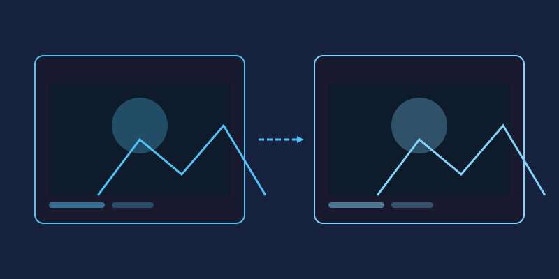

Remember when photo editing meant downloading a massive program, sitting through an installer, and praying it wouldn't eat half your hard drive? Those days are over. Everything on this list can be done right in your browser, in minutes, for free. Let's dive into ten effects that instantly make ordinary photos look extraordinary.
1. Gaussian Blur
Blur isn't just for hiding mistakes. A soft Gaussian blur turns cluttered backgrounds into dreamy washes of color, making your subject pop. Apply it to a duplicated layer, mask out your subject, and you've got that expensive portrait-lens look.
2. Sepia Tone
Sepia gives photos that warm, brownish glow of early photography. It works wonders on portraits and landscapes alike, adding instant nostalgia without looking dated. Most online editors offer it as a one-click filter, but dialing down the intensity keeps things subtle.
3. Vintage Fade
The vintage look is sepia's cooler cousin: faded blacks, slightly lifted shadows, and muted colors. Combine reduced contrast with a warm tint and a hint of grain, and your smartphone snapshot suddenly looks like it came out of a 1970s film camera.
4. Film Noise and Grain
Digital images are often too clean. Adding a touch of noise gives them texture and character, mimicking classic film stock. The trick is restraint—a little grain feels artistic, a lot just looks like a bad camera.
5. Vignette
A vignette darkens the edges of your frame, pulling the viewer's eye toward the center. It's one of the oldest tricks in photography and still one of the most effective. Keep it gentle; if people can tell you added one, it's too strong.
6. Sharpen
Not glamorous, but essential. A smart sharpening pass crisps up details after resizing or compressing an image. Online editors let you control both the amount and radius, so you can sharpen textures without creating ugly halos around edges.
7. Grayscale
Stripping away color forces viewers to focus on light, shape, and emotion. Black-and-white conversion is perfect for dramatic portraits, architecture, and street scenes. Pro tip: adjust brightness and contrast after converting for maximum punch.
8. Duotone
Duotone maps your photo onto just two colors—think deep navy and hot pink. It's everywhere in modern web design because it looks bold yet cohesive. Convert to grayscale first, then apply a color overlay, and experiment until the mood matches your message.
9. Glitch Art
Want something edgier? Glitch art deliberately corrupts your image with RGB channel shifts, scan lines, and pixel displacement. It started as an underground digital art movement and now shows up in album covers and posters everywhere. Layer a few channel offsets and slice the image horizontally for instant cyberpunk energy.
10. Double Exposure
The showstopper. Double exposure blends two photos into one frame—a silhouette filled with a forest, a portrait merged with city lights. Set your top layer's blend mode to Screen or Lighten, erase where needed, and watch two worlds collide.
Ready to Try Them?
All ten effects take just a few clicks in a browser-based editor like miniPhotoShop. No installs, no accounts, no watermarks. Open a photo, experiment fearlessly, and remember: every effect is undoable, so there's no such thing as a mistake—only experiments that didn't work out.